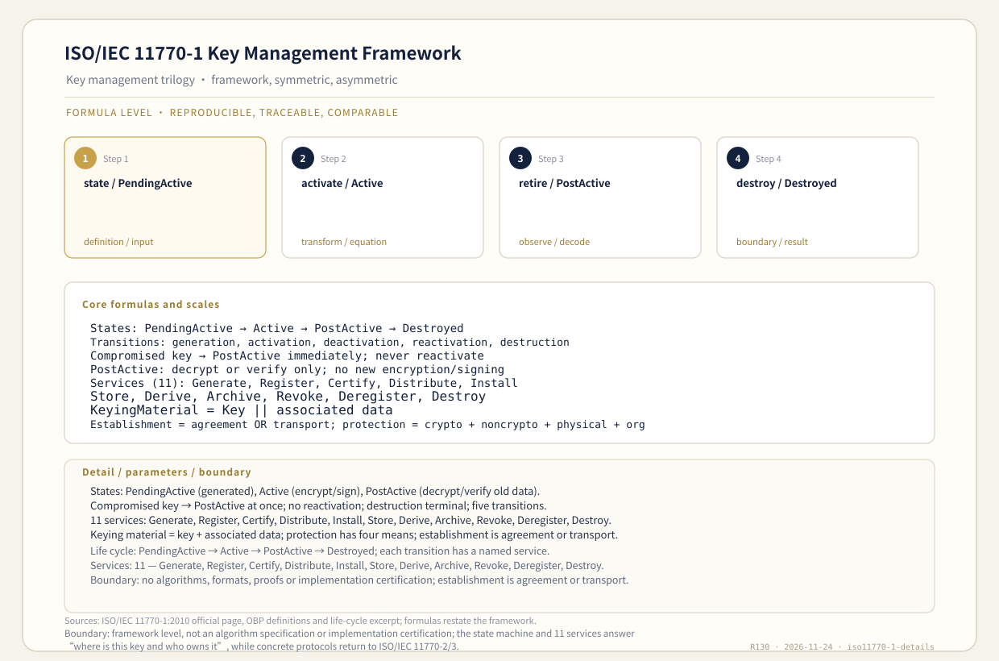
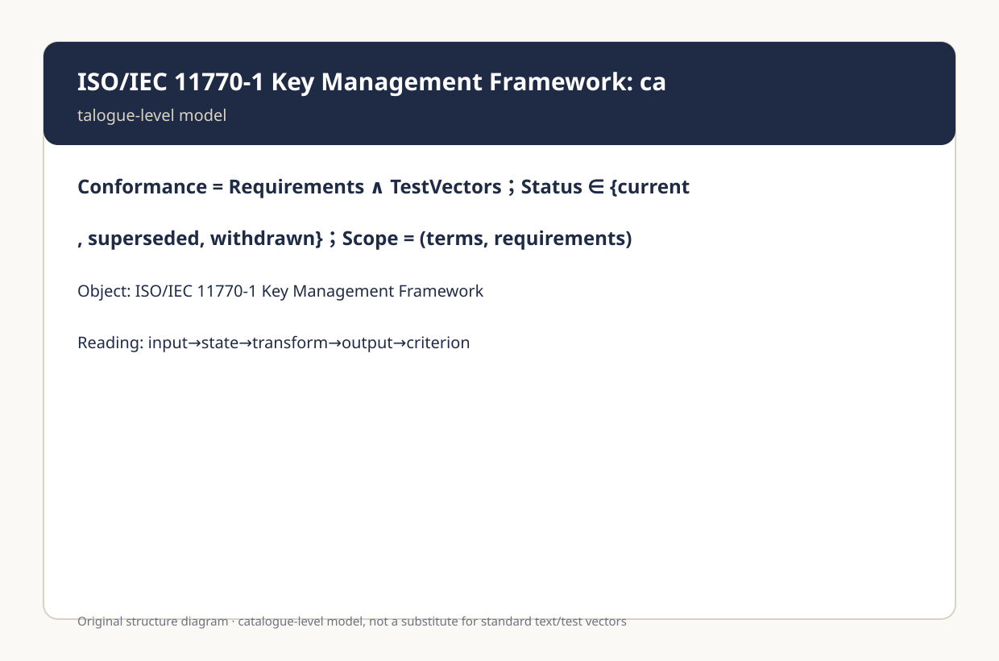

Principles
Standard: Key management — Part 1: Framework (密钥管理框架). ISO/IEC 11770-1:2010 is valuable not for a particular algorithm but for treating a key as a stateful object. The standard reduces the key life cycle to three principal states: PendingActive (generated but not enabled), Active (encryption, decryption, signing or verification) and PostActive (only decryption or verification of data processed earlier). Five transitions connect them: generation, activation, deactivation, reactivation and destruction. A key known to be compromised becomes PostActive immediately and shall not be reactivated. The framework lists 11 services: Generate-Key, Register-Key, Create-Key-Certificate, Distribute-Key, Install-Key, Store-Key, Derive-Key, Archive-Key, Revoke-Key, Deregister-Key and Destroy-Key. They cover administrative and technical actions from generation to destruction; the security policy decides which are mandatory and which optional. Keying material is more than the key: it also includes associated data such as identifiers, validity, purpose and algorithm parameters. Protection is cryptographic, non-cryptographic, physical or organisational. Key establishment has only two broad routes: key agreement, where both parties exchange data and neither can predetermine the result, and key transport, where one party chooses the key and protects it with asymmetric techniques for the other. A compact audit notation is K=(state, purpose, protection, custodian). Ask these four fields first; if one is missing, the key-management chain is broken.

Why it matters
Part 1 is the upper framework for Parts 2 and 3: the KDC/KTC mechanisms of Part 2 and the agreement/transport mechanisms of Part 3 all refer to its states and services. Misreading Part 1 as an algorithm standard causes two errors: assuming it specifies ciphers, and reducing the life cycle to “generate, use, delete”, which omits the read-only constraint of PostActive.
It also does not specify how a KDC or KTC is implemented. A KDC normally generates or acquires a key and distributes it; a KTC only translates or repackages keying material supplied by one party. Their trust models differ: a KDC knows the key, and a KTC may also see or rewrite it. The framework gives roles and services, not protocol messages.
“Reproducible at formula level” here means being able to draw the state machine, list the 11 services, explain four protection means and two establishment routes, not recite an algorithm.
Applications
An engineering audit follows five steps: 1) label every key with state and purpose; 2) check which services that state permits; 3) check that protection covers storage, transport and use; 4) check that derived keys pass through a KDF with context; 5) check that revocation, deregistration and destruction leave evidence.
A typical mapping: a long-term master key stays Active or PostActive; a session key is Active for a short period; a historical key is PostActive and only decrypts or verifies old data; a compromised key becomes PostActive at once and may still decrypt old data but must not enter new business. An archived key is for recovery of old data only and must not be reactivated for new encryption.
Destruction must cover all copies, backups, HSM slots and caches; deregistration must remove the key from directories or registries; revocation must publish status and block new use.

Limits & attacks
The framework does not define algorithms, parameters, message formats or protocol proofs, and it does not guarantee implementation security. The three principal states may be subdivided, but the standard does not require sub-states; the “decrypt or verify only” rule of PostActive is a constraint, not advice.
Common errors: reactivating a compromised key; treating an archived key as current; deleting only the primary copy; conflating KDC and KTC; treating “registered” as “activated”; treating a purpose/algorithm binding as a security policy.
It also does not cover cross-domain key management, the custody details of key recovery or hardware-module certification; those belong to Parts 2/3, Part 6 and ISO/IEC 19790.
History
The first edition established the framework in 1996; the second edition in 2010 was a technical revision, runs to 30 pages, was confirmed in 2021 and remains current. After Part 1, Part 2 covers symmetric mechanisms, Part 3 asymmetric mechanisms, Part 4 weak secrets, Part 5 group keys, Part 6 key derivation and Part 7 cross-domain passwords.
Worked example & verification
Formal model and reproduction steps
[S=\min_i S_i,\quad S_i\in{\text{密钥强度},\text{分组安全},\text{实现安全}}]
Key management — Part 1: Framework: the registered public parameters, key material or randomness, and message are mapped through the stated transformation to an output checked against the registered criterion. The worked example is a structural reproduction, not a new test vector; parameter ranges, standard versions and implementation details remain source-bound.
References
- Wikipedia search entry for 密钥管理框架. https://zh.wikipedia.org/w/index.php?search=%E5%AF%86%E9%92%A5%E7%AE%A1%E7%90%86%E6%A1%86%E6%9E%B6
- Handbook of Applied Cryptography (Menezes, van Oorschot, Vanstone). https://www.cacr.math.uwaterloo.ca/hac/